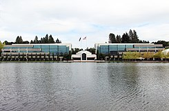

Nike
Nike, Inc.nota (/naiki/) (del griego: Νίκη, Niké, victoria; NYSE: NKE) es una empresa multinacional estadounidense dedicada al diseño, desarrollo, fabricación y comercialización de equipamiento deportivo: balones, calzado, ropa, equipo, accesorios y otros artículos deportivos.
Es uno de los mayores proveedores de material deportivo del mundo, con unos ingresos de más de 24,100 millones de dólares estadounidenses y un total en 2019 de unos 76.700 empleados. La marca por sí sola tiene un valor de 47,400 millones de dólares estadounidenses, lo que la convierte en la marca más valiosa entre las corporaciones deportivas.
La empresa fue fundada el 25 de enero de 1964 como "Blue Ribbons Sports" por Phil Knight y Bill Bowerman, y se convirtió oficialmente en Nike Inc., el 30 de mayo de 1971. Nike comercializa sus productos bajo su propia marca, así como bajo Nike Golf, Nike Pro, Nike +, Air Jordan, Nike Skateboarding, Hurley InternationalyConverse, Nike CR7, entre otras. Nike también fue dueño de Bauer Hockey (Nike Bauer) entre 1995 y 2008, y anteriormente propiedad de Cole Haan y Umbro. Además de la ropa deportiva y el equipo de fabricación, la compañía es dueña de las tiendas Niketown. Nike es patrocinador de muchos atletas de alto nivel y equipos deportivos de todo el mundo, con el famoso eslogan «Just do it y el logo, llamado Swoosh, creado por la diseñadora gráfica Carolyn Davidson, esquematización de un ala de Niké, diosa de la mitología que da nombre a la marca.

Fue fundada el 25 de enero de 1964 como "Blue Ribbons Sports" (BRS), por el deportista de la Universidad de Oregón Phil Knight y su entrenador, William Jay "Bill" Bowerman. La empresa comenzó distribuyendo calzado de la firma Onitsuka Tiger (actualmente ASICS) hasta 1971, cuando BRS lanzó su primer producto propio, con el emblema de la marca diseñado por Carolyn Davidson.
Según Otis Davis, un deportista, a quien Bowerman entrenó en la Universidad de Oregón, que más tarde pasó a ganar dos medallas de oro en los Juegos Olímpicos de Roma 1960. Bowerman hizo el primer par de zapatos Nike para él, lo que contradice la afirmación de que se hicieron por Phil Knight.